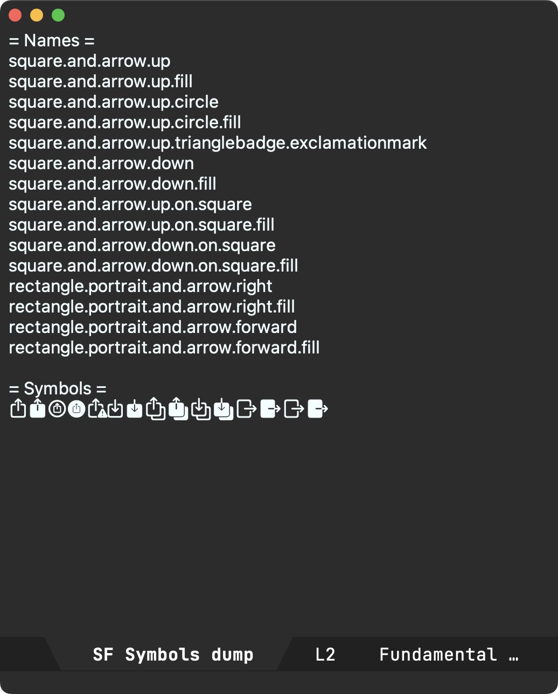
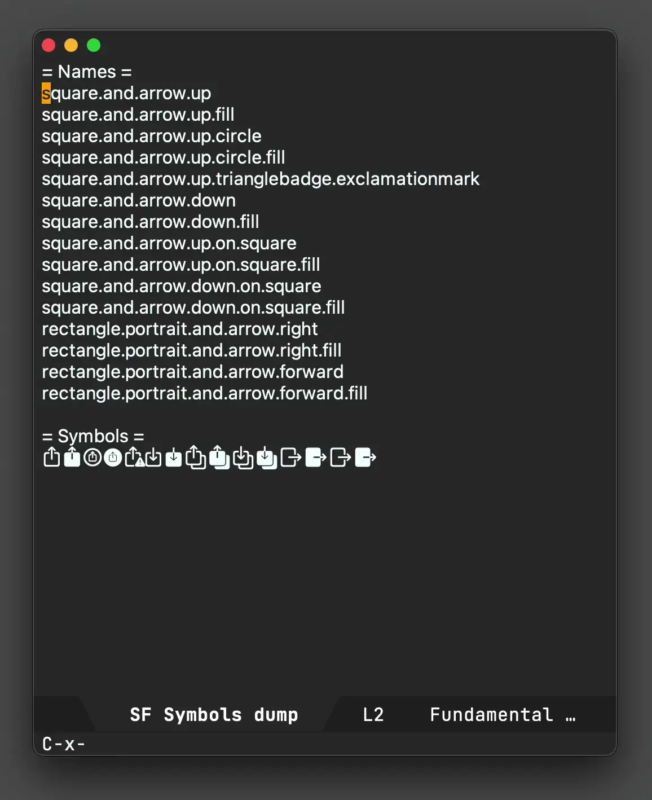
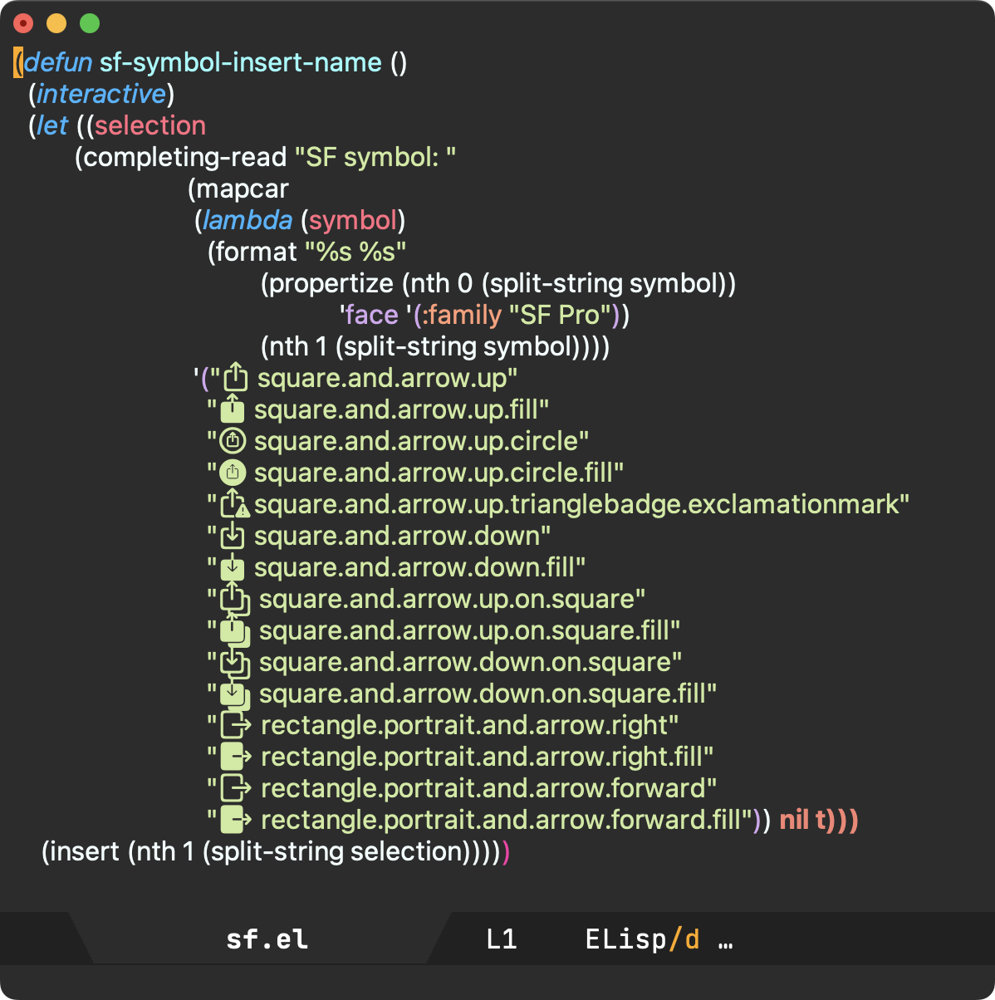

Álvaro Ramírez
Emacs: Macro me some SF Symbols
For inserting SF Symbols in SwiftUI, I typically rely on Apple's SF Symbols app to browse the symbols's catalog. Once I find a symbol I'm happy with, I copy its name and paste it into my Swift source. This works fairly well.
With Christian Tietze recently posting how he rendered SF Symbols in Emacs, I figured there may be a way to shift the above workflow to rely on Emacs completion instead. While I initially went down a rabbit hole to programmatically extract SF symbols (via something like SFSafeSymbols), I took a step back to rethink the strategy.
From the SF Symbols app, one can select multiple symbols and copy/paste either the symbols themselves or their respective names. The catch is you can only copy disjointed data. That is, you can copy the symbols or their names, but not both in one go. Let's take a look at what the disjointed data looks like. I've pasted both under separate sections in an Emacs buffer.

If I could rejoin these two sets, I would have a lookup table I could easily invoke from Emacs.
There are roughly 4500 symbols, so copying, pasting, along with text manipulation isn't manually feasible. Lucky for us, an Emacs keyboard macro is the perfect hammer for this nail. You can see the macro in action below.

This looks fairly magical (and it is), but when you break it down into its building blocks, it's nothing more than recording your keystrokes and replaying them. Starting with the cursor at the beginning of square.and.arrow.up, these are the keystrokes we'd need to record:
- C-s
- iseach-forward to search for a character and jump to it
- =
- insert
=so we jump to= Symbols = - <return>
- runs isearch-exit since we're done jumping.
- C-n
next-line.- C-a
beginning-of-line.- C-SPC
set-mark-commandto activate the region.- C-f
forward-charto select symbol.- C-w
kill-ring-saveto cut/kill the symbol.- C-u C-<space>
set-mark-command(with prefix) to jump back to where we started before searching.- C-y
yankto yank/paste the symbol.- C-<space>
set-mark-commandto activate the region.- C-e
end-of-lineto select the entire line.- "
- As a smartparens user, inserting quote with region places quotes around selection.
- C-n
next-line.- C-a
beginning-of-line. We are now at a strategic location where we can replay the above commands.
To start/end recording and executing keyboard macros, use:
- C-x (
- kmacro-start-macro
- C-x )
- kmacro-end-macro
- C-x e
- kmacro-end-and-call-macro runs your macro. Press
eimmediately after to execute again. - C-u 0 C-x e
- kmacro-end-and-call-macro (with zero prefix) repeat until there is an error.
Our previous example ran on a handful of SF symbols. Let's bring out the big guns and run on the entire dataset. This time, we'll run the entire flow, including macro creation and executing until there is an error (i.e. process the whole lot).

Now that we have our data joined, we can feed it to the humble completing-read.

It's worth highlighting that to render SF Symbols in Emacs, we must propertize our text with one of the macOS SF fonts, for example "SF Pro".
With all the pieces in place, let's use our new function to insert SF symbol names in a SwiftUI snippet. Since we're using completing-read we can fuzzy search our lookups with our favorite completion frameworks (in my case via ivy).

While this post is macOS-specific, it gives a taste of how powerful Emacs keyboard macros can be. Be sure to check out Emacs Rocks! Episode 05: Macros in style and Keyboard Macros are Misunderstood - Mastering Emacs. For those that dabble in elisp, you can appreciate how handy completing-read is with very little code.
The full source to sf-symbol-insert-name is available in my Emacs config repo. The function is fairly bare bones and has had fairly little testing. Patches totally welcome.
Update
There is some redundancy in the snippet I had forgotten to remove. Either way, latest version at sf.el.